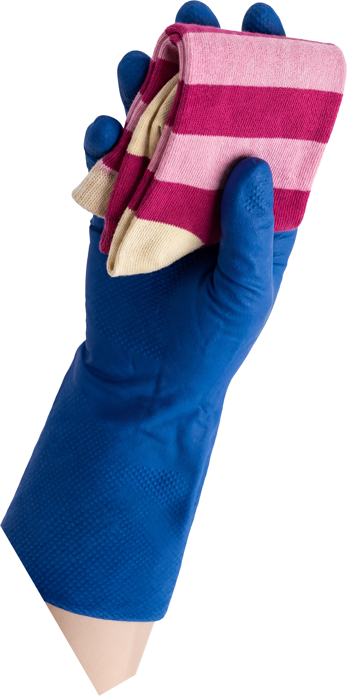

And what about
the
t
ime
?
Friday 17 July
How often should we come?
Just once
Every week
Every 2 weeks
Every 4 weeks
Want a lady you've had before?
Your lady speaks
English
Spanish
Georgian
Polish
Ukrainian
How many hours do you need?
−
3 hours
+
08:00
09:00
10:00
11:00
12:00
13:00
14:00
15:00
16:00
Continue